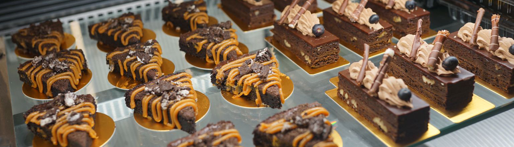
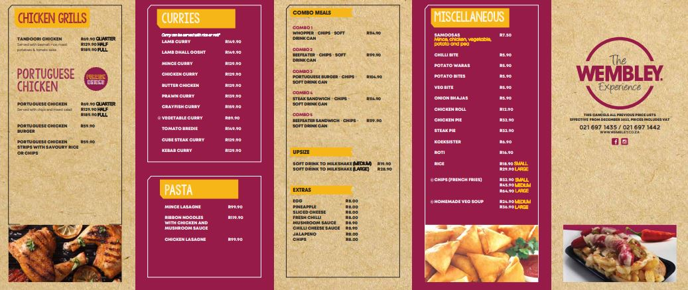

Welcome to
Wembley Roadhouse

From freshly baked bread and doughnuts to eclairs and triple-decker wedding cakes, A wide variety of tempting treats, whipped up daily by our confectioners. All products are freshly from the oven, and we use only pure dairy cream in our preparations. We cater for birthdays, events and special occasions.

Whether you’re feeling peckish over lunch or wracked by late-night cravings, the Wembley Road House is an institution designed to satisfy any seeker of fast, wholesome, delicious food. Open till half-past midnight seven days a week, the Road House serves up a bewildering variety of curries, samoosas, salads, grills and deep-dish pizzas. Our meat products are halaal. Eat under our roadside umbrellas or relax in our tranquil sheltered garden while our waiters attend to your every need. If you’re in a rush, our ample parking makes it easy to find a spot to eat in the comfort of your car.
Trading Times
- Monday to Thurs: 8am to 8pm
- Friday: 8am to 8pm, close from 12:30pm to 2pm
- Saturday: 8am to 8:30pm
- Sunday: 8am to 8:30pm